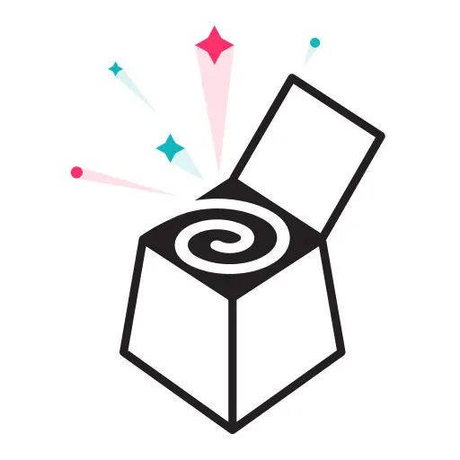

Liberating Structures: Transform Group Dynamics Through Expert Facilitation
Unlock your team's untapped potential through expertly designed and facilitated Liberating Structures workshops. When traditional meeting formats fail, these powerful microstructures create the conditions for full participation, genuine collaboration, and breakthrough results. Inclusive Dynamics specializes in crafting Liberating Structures experiences that transform how your team works together.


What are Liberating Structures?
Liberating Structures (LS) are a collection of 33+ simple, yet potent facilitation techniques that change the way people interact and work together. Unlike traditional presentations or open discussions that often favor a few voices, LS microstructures make it easy and engaging for everyone to contribute and shape outcomes.
They disrupt conventional patterns by providing clear constraints and invitations that spark creativity, encourage diverse perspectives, and enable groups to tackle complex challenges effectively.
For more information and resources from the Belgian community, visit liberatingstructures.be.
Traditional Approaches vs. Liberating Structures
- Presentations → Everyone actively contributes
- Brainstorming dominated by a few → Structured participation from all
- Open discussion favoring confident voices → Equal opportunity for input
- Top-down decision processes → Collaborative sense-making
- Passive listening → Active engagement
Our Approach to Liberating Structures Workshop Design
Effective Liberating Structures implementation requires more than simply selecting techniques from a menu. Our design process ensures your specific challenges are addressed through a thoughtfully crafted experience:
- Clarify Purpose & Challenge: We begin by understanding the specific challenge you're facing and defining clear, measurable outcomes for your workshop.
- Analyze Context & Dynamics: We consider your team's unique composition, existing dynamics, organizational culture, and specific constraints to tailor our approach.
- Design Experience Architecture: We craft a deliberate sequence of complementary Liberating Structures that builds momentum and guides participants toward your desired outcomes.
- Develop Powerful Invitations: We create precise, engaging prompts that focus participants' thinking and spark meaningful contributions.
- Plan for Integration & Action: We design specific moments to consolidate insights, make decisions, and create accountability for next steps.
Our expertise in Liberating Structures design ensures your team experiences not just an engaging workshop, but a transformative collaboration that delivers tangible results.
Expert Liberating Structures Facilitation
The difference between an ordinary meeting and a breakthrough collaboration often lies in the quality of facilitation. Our Liberating Structures specialists:
- Create psychological safety where authentic participation flourishes
- Provide crystal-clear guidance that makes complex structures accessible
- Read group energy and dynamics to adapt the process in real-time
- Balance structure with flexibility to respond to emerging needs
- Guide powerful debriefs that transform insights into actionable commitments
- Model the inclusivity that Liberating Structures are designed to create
With Inclusive Dynamics handling the facilitation, you and your team can fully engage in the content and connections, knowing the process is in expert hands.
The Transformative Impact of Liberating Structures
Organizations implementing Liberating Structures with expert facilitation experience:
- Inclusive Engagement: 100% participation regardless of hierarchy, personality types, or group size
- Collaborative Intelligence: Access to the full spectrum of perspectives and ideas previously hidden in your team
- Accelerated Innovation: Breakthrough thinking that emerges when diverse viewpoints connect in structured ways
- Decision Alignment: Shared understanding that leads to more committed implementation
- Cultural Transformation: Lasting changes in how people interact beyond the workshop
- Capability Building: Teams that learn facilitative approaches they can apply independently
These outcomes extend far beyond traditional meeting results, creating lasting value for your organization.
Starting Small with Liberating Structures
Although Liberating Structures have proven effective across various contexts, we understand that implementing new methodologies can feel daunting for organizations that have never tried them. The good news? You don't need a comprehensive transformation plan to begin.
The trick is to start very small and let the approach grow organically. Begin with simple structures like 1-2-4-All or TRIZ in your next meeting, then gradually introduce more complex structures as your team becomes comfortable with the approach.
Over time, these small experiments can subtly but powerfully shift your organizational culture toward more inclusive and effective collaboration. Many of our clients are surprised by how quickly these microstructures create noticeable improvements in team dynamics and outcomes.
The most important step in this process is simply to start. Rather than waiting for the perfect moment or developing an elaborate implementation strategy, try a single Liberating Structure in your next meeting. This low-risk approach allows you to experience the benefits firsthand and build momentum naturally.
We can guide you through this gradual adoption process, providing just the right level of support as you and your team discover the power of these simple yet transformative approaches.
Liberating Structures in Action: Client Experiences
Strategic Alignment Challenge
A global team struggling with misaligned priorities participated in a workshop sequence using 1-2-4-All, Min Specs, and Ecocycle Planning. The result: A shared strategic direction and clear implementation priorities that previously seemed impossible to agree upon.
Innovation Barrier
When traditional brainstorming repeatedly produced the same ideas, we facilitated a TRIZ and 25/10 Crowd Sourcing session that broke through conventional thinking and generated breakthrough concepts that are now being implemented.
Cross-functional Collaboration
Siloed departments used Conversation Café and Wise Crowds to develop mutual understanding and create new collaborative processes that have reduced project delivery time by 30%.
Ready to Experience the Liberating Structures Difference?
Whether you're facing team misalignment, need to solve complex problems collaboratively, or want to build a more participatory culture, Liberating Structures provide a powerful approach.
Schedule a Discovery Call to discuss how we can design a custom Liberating Structures experience for your specific challenge.
New to Liberating Structures? Get in touch and we'll help you pick the right starting point for your team.
Want to learn more about the Liberating Structures community in Belgium? Visit www.liberatingstructures.be for resources, events, and connections.